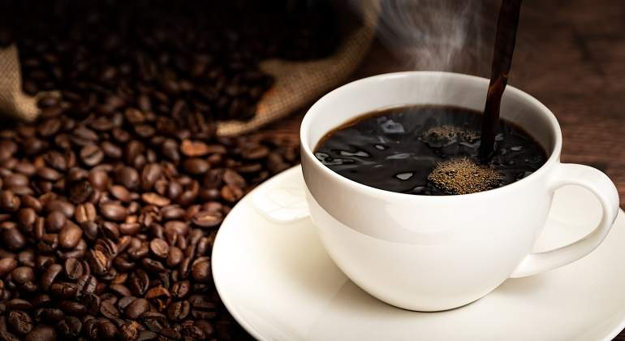
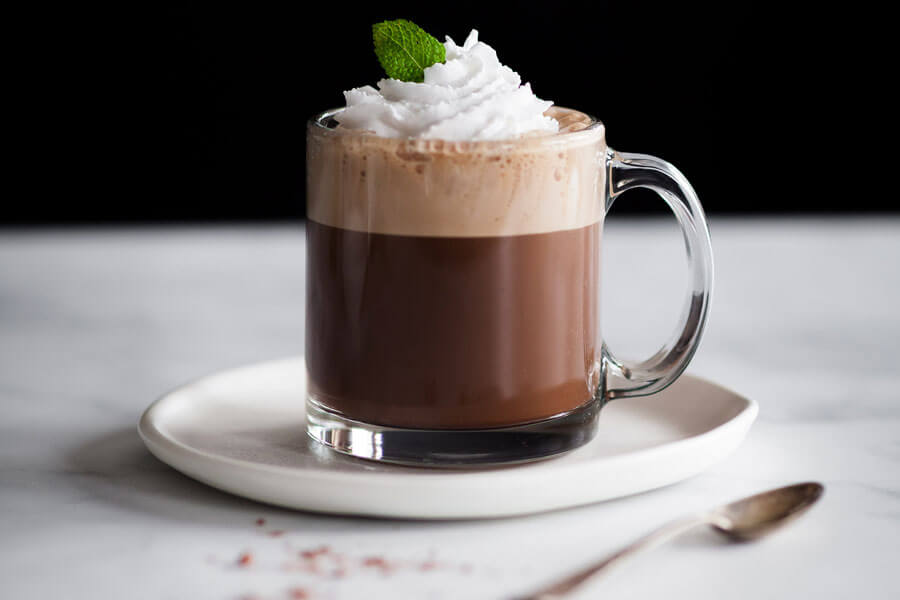
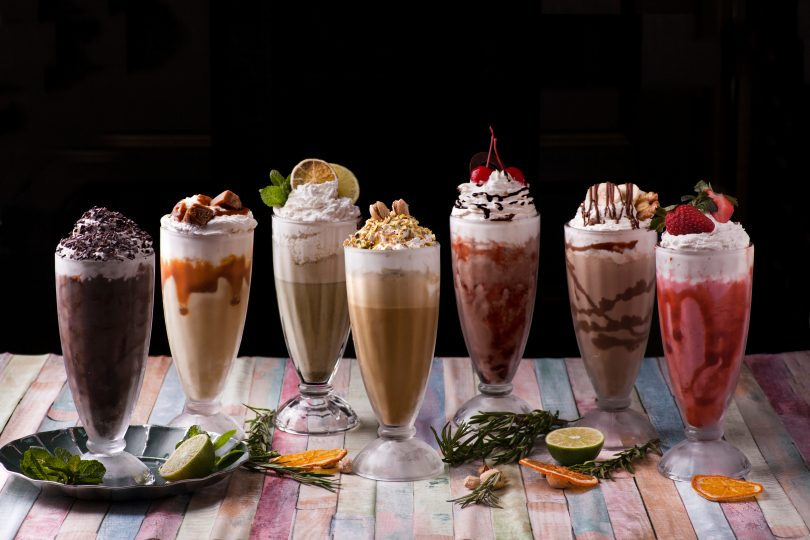

Tipos de Café.
El café es una de las bebidas más apreciadas y consumidas en todo el mundo. Es popularmente conocido por contener cafeína y ayudar a sentirse activo especialmente por las mañanas. Su rico sabor y su fácil elaboración hace que sea asequible para todo el mundo por lo que es normal que sea tan popular. Además de porque es una bebida muy versátil y que se puede preparar de muchas diferentes según los gustos de cada persona.
Café Negro
Uno de los tipos de café más básicos y sencillos, únicamente consta de un infusión de café la cual se realiza hirviendo agua en contacto con el grano, consumido por lo general en todas partes de México. Antiguamente se hacía sólo con café de grano, pero en las últimas décadas el café instantáneo ha ganado mucho terreno. Conocido también como café americano.
Capuchino
El capuchino es otro de los cafés más habituales, siendo semejante al café con leche con la excepción de que en este caso solo encontraremos alrededor de un tercio de café, siendo el resto leche. Por lo general gran parte de esta es espumada, y suele añadírsele de forma espolvoreada algo de cacao en polvo para darle un sabor más dulce.
Mocca
Un café moca es una variante del café con leche. Como este, suele llevar un tercio de expreso y dos tercios de leche vaporizada, pero se añade una parte de chocolate, normalmente en forma de jarabe de chocolate, aunque algunas máquinas usan chocolate en polvo instantáneo. Los mochas contienen chocolate negro o con leche. Como el capuchino, el moca tiene la famosa espuma de leche encima, aunque a veces se sirve con crema de leche en su lugar.
Frappe
Frappé, Frappuccino, o Frappé Latte es sin duda uno de los más populares del mundo, especialmente en verano. El frappé es un café frío en forma de batido a la vez vistoso. Quizá el verano es la época ideal para probar e esta preparación del café. Los frappé se realizan mezclando café con hielo picado, y suele ir acompañado de nata o crema de leche, azúcar.